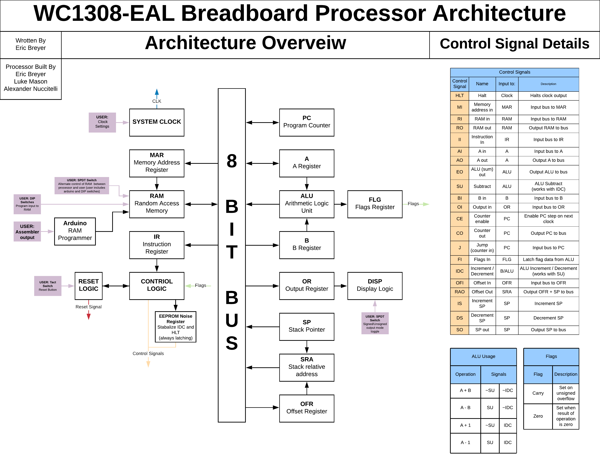

"WC1308-EAL” 8 Bit Breadboard Computer
Written by Eric Breyer
With help and input from Alexander Nuccitelli and Luke Mason
Computer built by Eric Breyer, Alex Nuccitelli, and Luke Mason
Created in image of Ben Eater’s 8-Bit Computer, which can be found here

Credits
Ben Eater - for all his work that helped us learn so much and make this project happen
u/lordmonoxide - for advice on power problems
u/Misterjay1234 - for advice on implementing a larger RAM chip
u/MikeSutton80 - for inspiring our implementation of INC/DEC
u/btc08 - for inspiring the use of LED bars
Our Digital Electronics teacher - for all his support throughout this project
Eric’s father - for all his advice and help
Using this Document
This document was intended to be documentation for our team to be able to remember everything we had done together and everything we had learned, but I believe the work we have done can be beneficial to the community.
- As an auxiliary resource (in addition to Ben’s videos) for new builders. I have laid out general workings, summaries, and explanations of each component.
- For those with “impossible bugs”. See “Major Problems and Solutions” for some of the bugs we encountered and their solutions. I believe these solutions are applicable throughout electronics and may be solutions to problems that don’t look exactly the same as well.
- For those looking for ways to upgrade their build. See “Major Changes and Additions to Ben Eaters Design.” We have done a lot of work on upgrades that I would love to share.
- For those looking to document their own build, I hope this can serve as a jumping-off point.
Project Background
As a lab group in our Digital Electronics class, we started to experiment in our own time with ICs found in our classroom. We soon became interested in the creation of certain processor elements, like how memory and arithmetic operations worked, and sought out a suitable model that we could use to learn these concepts that were beyond the classroom curriculum. Ben Eater had created and posted on his website his breadboarded 8-bit computer, which we decided to base our new project off of. While purchasing the necessary electrical parts, we picked out a few ICs that would allow us to improve upon Ben Eater’s design. We made it our task to modify and optimize the model in order to incorporate a larger number of instructions, larger memory, and more.
Other Notes
This is by no means a guide that goes into the nitty-gritty of how the lowest level of the computer functions. If you would like to dive that deep, which I do highly recommend, please watch Ben Eater’s video series.
This document is by no means finished nor is it a final draft. We will keep updating it as we expand on the design more and just to make general improvements. Things on the table for the document include:
- Schematics - as soon as they are ready, take a long time to make
- Implementation and design of the stack - once we can get back together again after COVID. We have a design for the stack but haven’t been able to implement it due to COVID.
- And more
We have more upgrades planned for when we can get back together again. The fist of which is the set of modules that will implement the stack. We already have this designed and are desperately waiting and looking forward to being able to build it. Further down the road, we have been thinking about an LCD display and some kind of user input component.
As you can see in the picture our wiring is a bit messy. We do have plans to clean it up, but the wiring has never caused us any problems. That being said if we were to do it again we would definitely stress keeping the wires cleaner from the start.
Table of Contents
Overview
Computer Architecture
Note: The Stack Pointer, Offset Register, Stack Relative Address, and all associated uCodes have not been implemented yet, but are slated for the future.
Major Changes and Additions to Ben Eaters Design
- Expansion to of RAM to 256 bytes
- Expansion of “address bus” - MAR
- Expansion of program counter - Program Counter
- Expansion and reworking of instruction register - Instruction Register
- This allowed for and necessitated the use of 8 bit opcodes and operands
- Used larger eeproms - Control Logic
- Revised EEPROM Programmer for 8 bit opcodes - EEPROM Programmer
- New program structure, fetch cycle, opcodes etc. - Programing the Computer
- Assembler and RAM Writer
- See “Wifi RAM Writer and Assembler”
- New Opcodes like Increment, Decrement, and Compare
- See “Programing the Computer”
- Also for Increment and Decrement - ALU and B Register
- Misc. Changes
- Tweaked carry flag - Flags Register
- Conditional Jumps + Flags allow for logical comparison - ALU, Flags register, CMP opcode
- See “Major Problems and Solutions” for changes relating to power, stable outputs etc.
- Also see “EEPROM Stability Register”
- Added many capacitors
- Use same register chip as all the other registers for the output register - Output Register
- Use LED bar arrays and put a resistor between them and ground
- Stack - Not yet implemented
- Stack Module(s)
- New microcodes/control signals
- Stack relative instructions
- Subroutines
Bugs
We had our fair share of bugs to solve in this project. Please see “Major Problems and Solutions” for some of our bugs and solutions. These solutions relate to electronics in general, and are good things to watch out for.